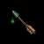
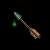
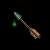

THE POISONED QUARRELS RESALE TRICK

THE POISONED QUARRELS RESALE TRICKThanks to Henrik Salomonsson (of Sweden) for sharing this discovery.

THE POISONED QUARRELS RESALE TRICKThanks to Henrik Salomonsson (of Sweden) for sharing this discovery.
Poisoned Quarrels are usually not for sale (except in Raglam). You should not need to BUY them, since you can poison them yourself, using Silverthorn or the Silver Spider (from Chapter 3 onwards). If you want to SELL Quarrels, and hold the Spider, ALWAYS poison them first - you will get a better price.For some reason Poisoned Ordinary Quarrels are over five times more valuable than Ordinary Quarrels (as opposed to Tsurani and Elven Quarrels). At the very beginning of Chapter 3, you will automatically have the Silver Spider, which allows you to poison Quarrels freely.
In a few Shops, which have Quarrels for sale, this means you can buy Ordinary Quarrels, poison them, and then sell them back at a PROFIT!
The best place to perform this trick is NIA'S GOODS in Chapter 3 (if you have solved Nia's Quest in order to open up the shop). Here you can Buy, Poison and Sell at a Profit of 22.4 per Quarrels[25]. (Haggling may result in a slightly larger profit.) This can be repeated endlessly, until you're as rich as you need.
Below, you'll find a list of the Shops which allow this gambit, and the Profit per each transaction of Quarrels[25]. Obviously, in most of the cases, the Profit is too small to bother with. But if you happen to be dying for an extra couple of Sovereigns in any of these Shops, this might be your solution.
NIA'S GOODS (Chapter 1) 22.4 NIA'S GOODS (after Quest) 12.2 FLETCHER'S POST (LaMut) 11.8 SIGN OF THE EAGLE (Krondor) 5.9 SPLIT TREE GOODS (Caldara) 4.8 THE ARMORY (Malac's Cross) 2.1
[TOP OF PAGE]